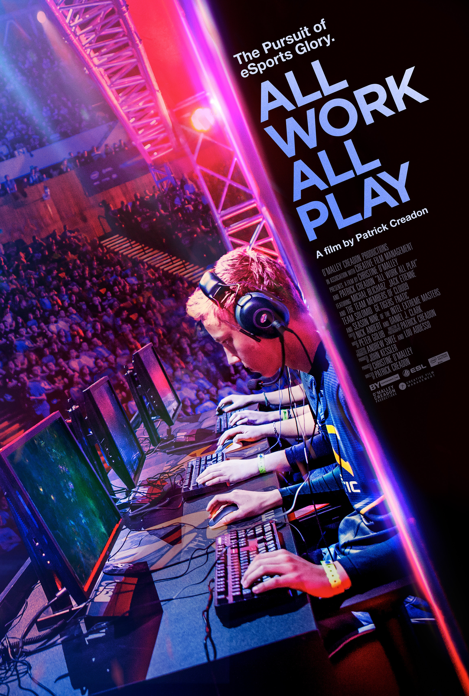
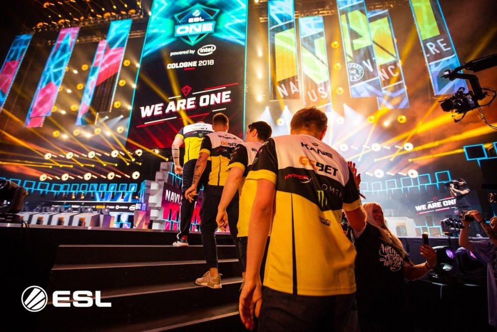
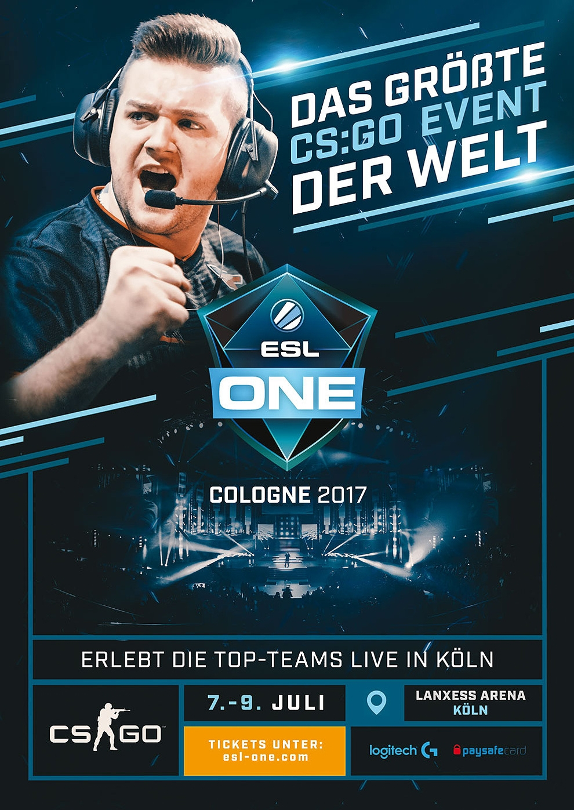

|
|
|
home | top games to compete | catogory | merch shop| events| contact|your bookings | PS4 events | x box events |
info Let's have a look at the top 5 mobile eSports games. Vainglory. This first online MOBA has earned its place among the best eSports mobile games list due to 5v5 battles, a wide choice of heroes and free gameplay. ... Clash Royale. Probably, one of the best in the list. ... Honor of Kings. ... Arena of Valor. ... Mobile Legends. There is no need to explain why eSports has shown great growth results in the past years. Despite the fact that popular games are available mainly on PC, mobile applications usage is already gathering pace and is about to change gamers’ view of cybersport. Android and iOS-based MOBAs and MMOs have taken their strong position and are not planning to give up. Let’s have a look at the top 5 mobile eSports games. This first online MOBA has earned its place among the best eSports mobile games list due to 5v5 battles, a wide choice of heroes and free gameplay. Since its launch in 2014, Vainglory has already built its own professional gaming scene. World Championship 2017 gathered over 56.000 viewers. By that time, the size of a prize pool reached $140.000  info ESL, formerly known as Electronic Sports League, is an esports organizer and production company that produces video game competitions worldwide.[1] ESL is the world's largest esports company,[2] and the oldest that is still operational.[3] Based in Cologne, Germany, ESL has eleven offices and multiple international TV studios globally. ESL is the largest esports company to broadcast on Twitch.tv.[4][5] Contents 1 History 2 Competitions 2.1 ESL Play 2.2 ESL Pro Leagues 2.3 ESL National Championships 2.4 ESL One 2.5 Intel Extreme Masters 3 ESL Technology 4 AnyKey 5 Media 6 References 7 External links  ESL One refers to premier offline tournaments across a variety of games,[44] like Counter-Strike: Global Offensive[45][46] and Dota 2, and are usually considered among the most prestigious events for each game.[47] ESL One events are often selected to be part of the Valve-sponsored CS:GO Major series. The ESL Counter-Strike Majors have been: EMS One Katowice 2014, ESL One Cologne 2014, ESL One Katowice 2015, ESL One Cologne 2015, ESL One Cologne 2016 and IEM Katowice 2019. As of March 2019, ESL has hosted six of the fourteen Valve Major tournaments. info ESL National Championships are region-specific ESL Pro competitions held in various countries. ESL Meisterschaft, the German championship, began in 2002 and is the oldest esports league in existence.[42] The ESL UK Premiership, another regional esports program, has been ESL's largest regional tournament since 2010. National Championships are established in order to spread local esports competition around the world.[43] ESL National Championships are held for Battlefield 4, Counter-Strike, Dota 2, Halo, Hearthstone, Heroes of the Storm, Mortal Kombat, Smite, StarCraft II, World of Tanks, and Rainbow Six.  infoESL National Championships are region-specific ESL Pro competitions held in various countries. ESL Meisterschaft, the German championship, began in 2002 and is the oldest esports league in existence.[42] The ESL UK Premiership, another regional esports program, has been ESL's largest regional tournament since 2010. National Championships are established in order to spread local esports competition around the world.[43] ESL National Championships are held for Battlefield 4, Counter-Strike, Dota 2, Halo, Hearthstone, Heroes of the Storm, Mortal Kombat, Smite, StarCraft II, World of Tanks, and Rainbow Six. infoESL National Championships are region-specific ESL Pro competitions held in various countries. ESL Meisterschaft, the German championship, began in 2002 and is the oldest esports league in existence.[42] The ESL UK Premiership, another regional esports program, has been ESL's largest regional tournament since 2010. National Championships are established in order to spread local esports competition around the world.[43] ESL National Championships are held for Battlefield 4, Counter-Strike, Dota 2, Halo, Hearthstone, Heroes of the Storm, Mortal Kombat, Smite, StarCraft II, World of Tanks, and Rainbow Six.ESL National Championships are region-specific ESL Pro competitions held in various countries. ESL Meisterschaft, the German championship, began in 2002 and is the oldest esports league in existence.[42] The ESL UK Premiership, another regional esports program, has been ESL's largest regional tournament since 2010. National Championships are established in order to spread local esports competition around the world.[43] ESL National Championships are held for Battlefield 4, Counter-Strike, Dota 2, Halo, Hearthstone, Heroes of the Storm, Mortal Kombat, Smite, StarCraft II, World of Tanks, and Rainbow Six. |